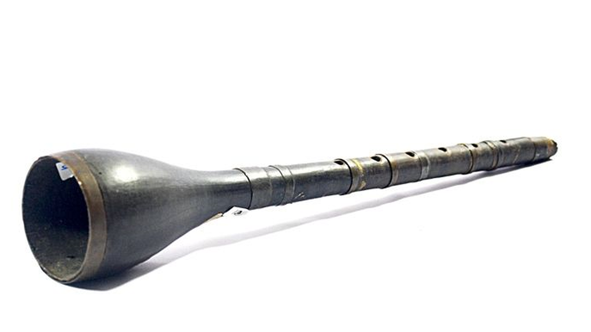
Aceh
Serune Kalee
Bentuk yang menyerupai klarinet dengan corong mengembang di bagian ujungnya.
Alunan nada sakral dari perunggu, bambu, dan dawai yang melintasi lorong waktu. Merajut rasa syukur, spiritualitas, serta ritme kehidupan masyarakat kepulauan nusantara.

Menampilkan 12 instrumen musik khas warisan leluhur bernilai akustik dan estetika luhur.

Bentuk yang menyerupai klarinet dengan corong mengembang di bagian ujungnya.
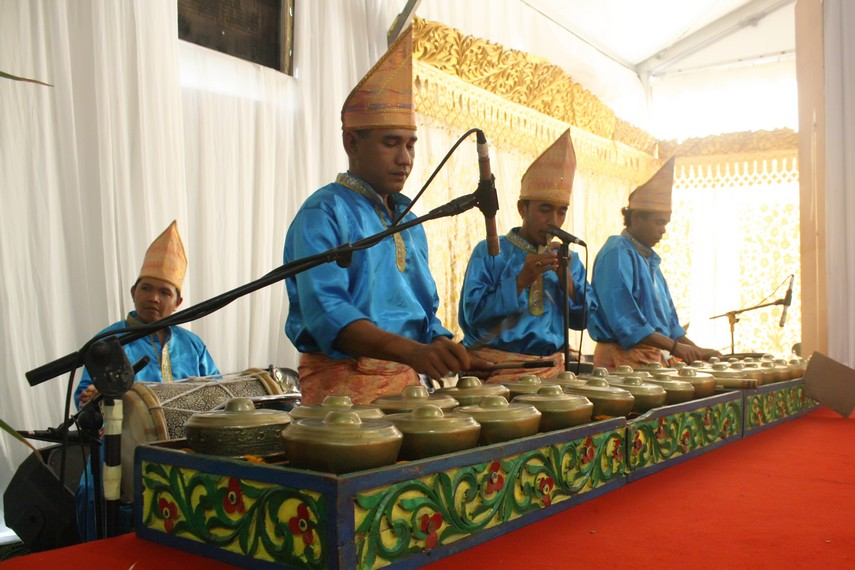
Alat musik berbentuk gong kecil yang terbuat dari kuningan atau perunggu.
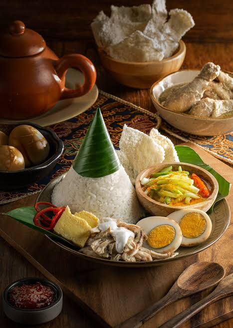
Digoyangkan ke kiri dan ke kanan sehingga batang bambu bergetar dan mengeluarkan bunyi harmonis bernada tunggal.
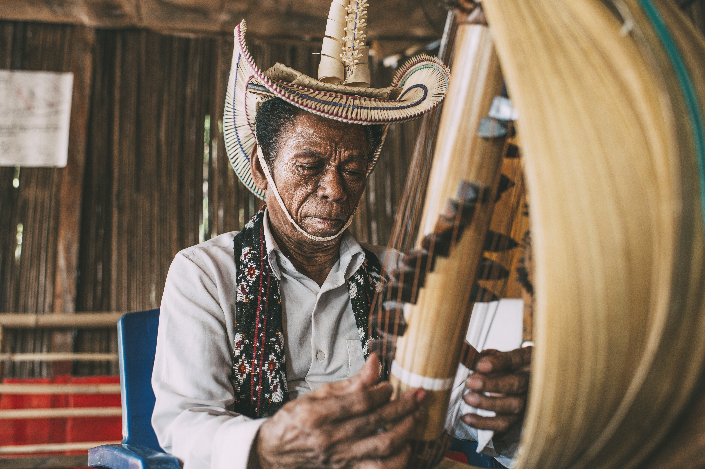
Dipetik senarnya dengan jari kedua tangan, diletakkan di pangkuan. Terbuat dari daun lontar yang melengkung.
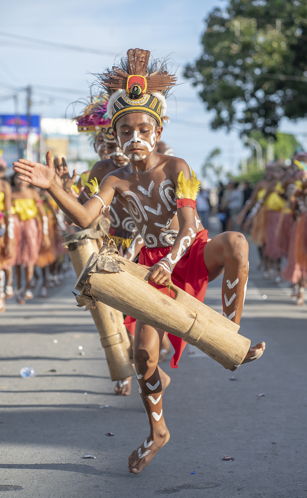
Dipukul pada bagian kulit tabung kayu berongga dengan tangan kosong, sering mengiringi nyanyian dan tarian adat.
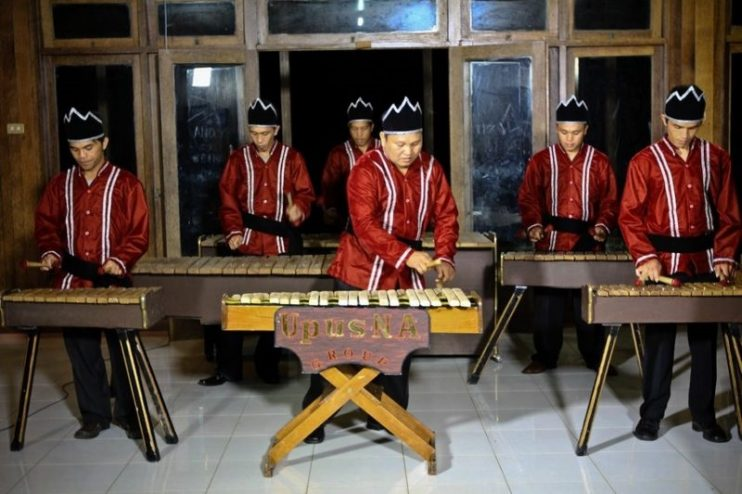
Dipukul menggunakan pemukul kayu pada bilah-bilah kayu berderet di atas resonator oleh kelompok pemusik.
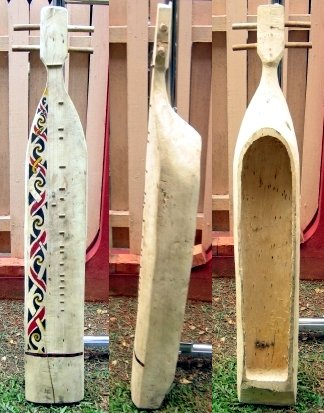
Dipetik senarnya dengan jari seperti gitar sambil duduk, mengiringi nyanyian kehidupan dan keindahan rimba alam.
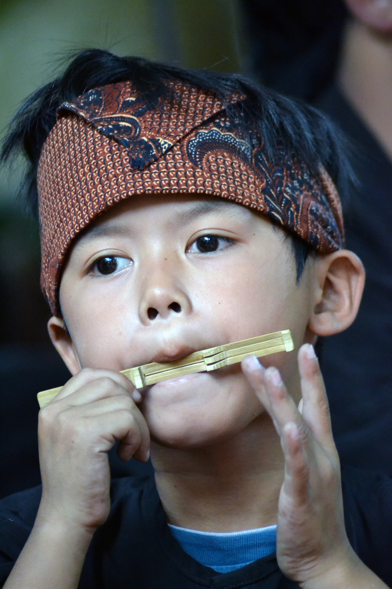
Diletakkan di mulut, ujungnya dijepit di bibir dan dipetik jari. Berfungsi sebagai resonator pengusir hama sawah tempo dulu.
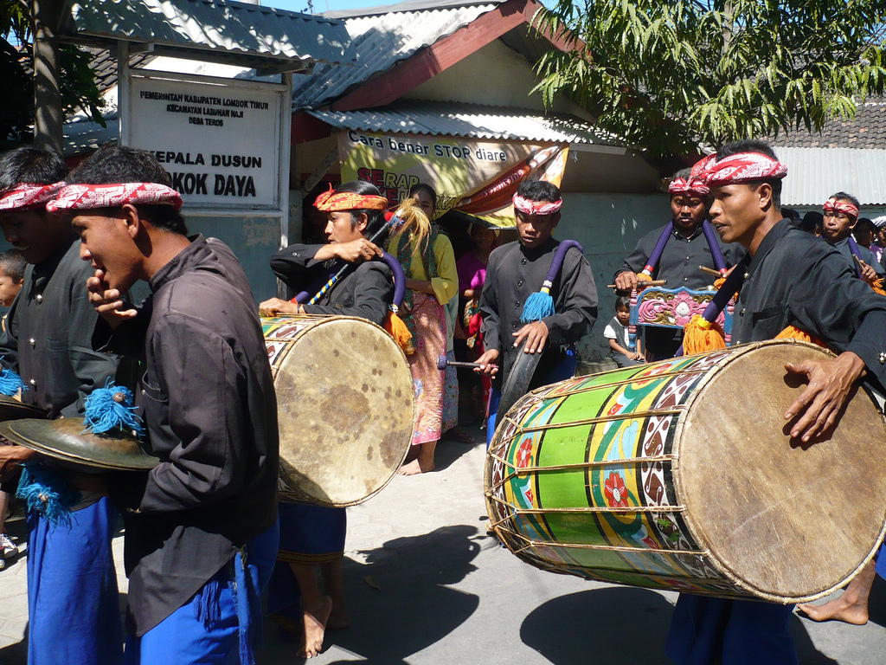
Dipukul kedua sisi kulitnya secara berkelompok. Gendang besar sakral penyemangat prajurit perang dan penyambutan kehormatan.
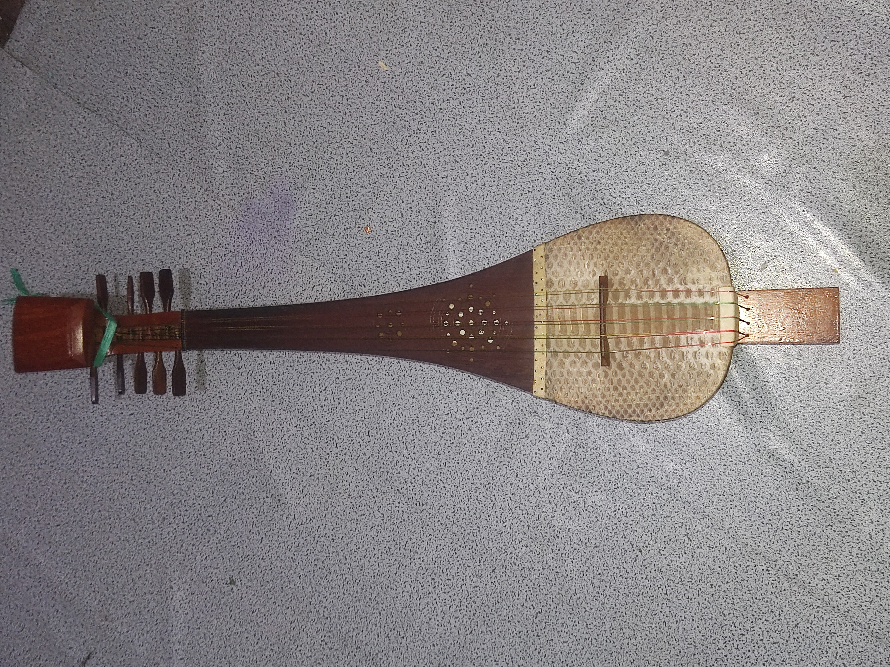
Dipetik senarnya dengan jari atau plektrum. Berbentuk labu lonjong adaptasi budaya timur tengah pengiring syair dan dakwah.
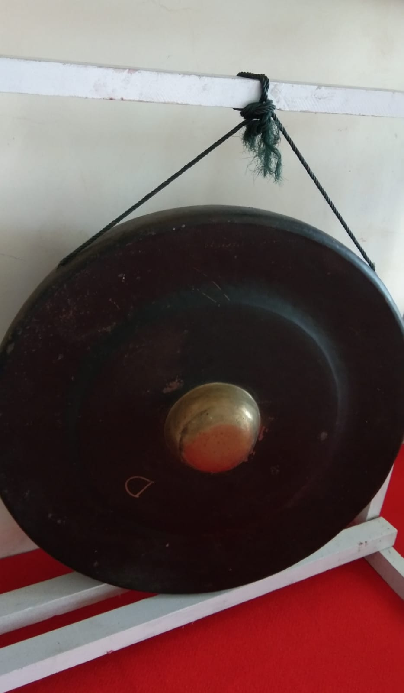
Dipukul pada deretan gong kecil secara bersahutan. Simbol kekuatan sakral dan persatuan antar-marga di Pulau Nias.
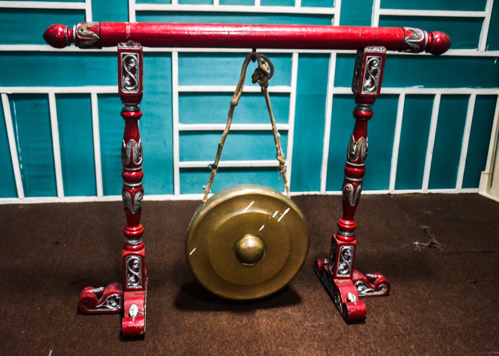
Dipukul pada pinggir logam mangkuk dangkal. Berbunyi nyaring sebagai tanda pemberitahuan bahaya, pertemuan, dan sholat.
Setiap jengkal kepulauan memiliki kekhasan bahan baku alat musik, mulai dari bambu pegunungan hingga kulit fauna lokal.